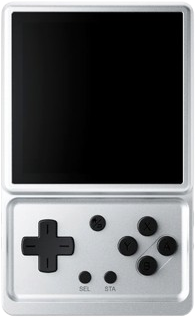

RG Rotate
The Anbernic RG Rotate is a Unisoc T618 handheld with a 720x720 screen. It is the only device that needs a replacement SPL flashed once from a PC, and the only one that ships the GameCube core.

| Argument | rg-rotate |
/etc/rgos-device | rg-rotate |
| SoC | Unisoc T618 (Mali-G52 GPU) |
| Screen | 720x720 (native size of the boot logo) |
| Base image | ROCKNIX-T618 |
| Partition table | GPT; partition 3 is the uboot partition |
| ROMS partition | created on first boot as partition 4 |
| Bootloader | SPL flashed once from a PC, U-Boot on the card |
| Device tree | device_trees/ums512-rg-rotate.dtb |
| Image | rg-rotate-rgos.img |
Flash the SPL first
The Rotate needs a replacement splloader (SPL) so that it can boot
Linux from the SD card. This is done once, from a PC, with the tools
in spl-flasher/. Use it only on an Anbernic RG Rotate.
The steps, and how to restore the stock SPL, are in
RG Rotate: flashing the SPL.
Build
sudo ./build.sh rg-rotate # SD card image -> out/rg-rotate-rgos.img
sudo ./build.sh rg-rotate installer # first-boot installer image -> out/rg-rotate-rgos-installer.img
sudo ./build.sh rg-rotate update # offline update tar -> out/rgos-update-rg-rotate-<id>.tar
GC_REPO=none sudo -E ./build.sh rg-rotate # skip the GameCube core (faster build)
RGOS_INITRD=0 sudo -E ./build.sh rg-rotate # use ROCKNIX's own init instead of the RG OS initramfs
The GameCube core (Dolphin libretro) is compiled only for this
device and the build is slow under qemu emulation. In GitHub
Actions use the build_gc checkbox. There is no RAM
type or panel revision to choose. See
Build options.
Flash and first boot
-
Flash
rg-rotate-rgos.imgto the whole card (not to a partition) with balenaEtcher, Raspberry Pi Imager ordd, then eject it cleanly. -
Make sure the SPL has been flashed (above). Partition 3 of the
card must be the GPT partition named
uboot. -
Insert the card and power on. On the first boot
rgos-romscreates the ROMS partition (partition 4, exFAT) in the free space on the card. The old partition table is backed up to the boot partition first. -
Copy ROMs into
roms/<system>/on the ROMS partition and press X in the launcher to rescan.
The full walkthrough is in Getting started; the first-boot installer image is described in First-boot installer.
Controls and input
The Rotate has analog sticks, L2/R2 and L3/R3, enabled by
/etc/rgos/input-rg-rotate.json. The standard launcher
buttons and RetroArch hotkeys apply, including
Menu + R2 (hold) for fast-forward. See
Controls and hotkeys.
GameCube
GameCube (Dolphin libretro, GameCube only, no Wii) runs on this
device only; the system is hidden on every other device. Put games
in roms/gc/. Every launch gets a tuned set of Dolphin
options for the Mali-G52. Setup, performance tuning and what to do
when a game closes right after launching are in
Nintendo GameCube (RG Rotate only).
HDMI
The RG Rotate (T618) is not included in the H700 mini-HDMI implementation. See Mini-HDMI output.
Offline updates
An update tar built with ./build.sh rg-rotate update
only installs on this device (/etc/rgos-device is
rg-rotate). It can replace SYSTEM,
rgos-initrd.cpio and optionally KERNEL,
device_trees/ums512-rg-rotate.dtb and
extlinux/extlinux.conf. See
Offline updates.
Troubleshooting
-
It boots Android instead of RG OS. Android does
not always mean the SPL failed to find U-Boot: the boot chain
falls through to the internal Android whenever the card's U-Boot
cannot start Linux, for example when it cannot load the initrd.
Check that partition 3 is the
ubootGPT partition (sgdisk -p /dev/sdX) and re-flash the image and the SPL. To tell the two cases apart, try the stock ROCKNIX T618 image: if it also ends up in Android, the SPL or the card is the problem. -
Black screen, no
rgos-initramfs.txt. U-Boot started but the RG OS initramfs did not run. Copyextlinux/extlinux.conf.stockoverextlinux/extlinux.confon the FAT partition and boot again, or rebuild withRGOS_INITRD=0. -
The ROCKNIX boot screen shows before RG OS. The
card was built with
RGOS_INITRD=0, or is an older build that leftextlinux.confuntouched. - The console no longer boots after flashing the SPL. Restore the stock SPL; the steps are on RG Rotate: flashing the SPL.
The full explanation is in Troubleshooting.
Related pages
- Supported devices: side-by-side comparison
- RG Rotate: flashing the SPL
- Nintendo GameCube (RG Rotate only)